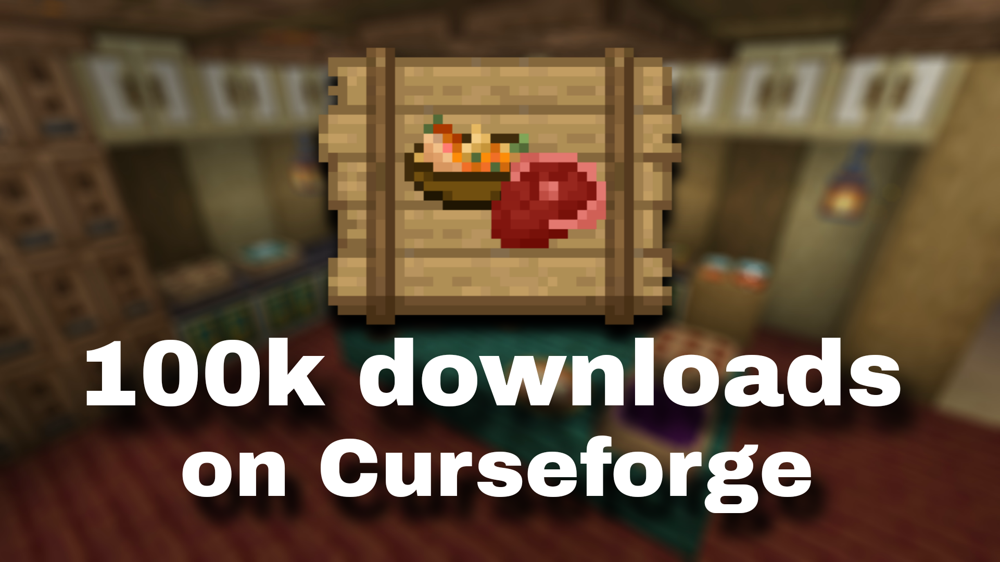

<!DOCTYPE html>
<html lang="en">
<head>
  <link rel="icon" href="../img/themes/active/favicon.png">
  <title>100k downloads IaFD on Curseforge | Blog | Donne431</title>
  <meta name="viewport" content="width=device-width, initial-scale=1, maximum-scale=1" />
  <meta name="title" content="100k downloads IaFD on Curseforge | Blog | Donne431">
  <meta name="description" content="Welcome to my website! I am Donne431, just a guy, who love made a modifications for games. I'm 16 years old, and I'm from Crimea, Russia (demi-island washed by the Black and Azov Sea). I also like to create almost any content for Minecraft, that is: mods, maps, resource packs, servers.">
  <meta name="keywords" content="Minecraft, Forts, Mods, Resourcepacks, Datapacks, Donne431">
  <meta name="theme-color" content="#4bb4f1">


  <script src="https://code.jquery.com/jquery-3.3.1.min.js"></script>
  <script src="https://cdn.jsdelivr.net/npm/handlebars@latest/dist/handlebars.js"></script>
  <script src="https://mcapi.us/scripts/minecraft.min.js"></script>
  <script src="../js/main.js"></script>
  <script src="../js/lang.js"></script>
  <script src="../config.js"></script>
  <script src="../js/lightbox.min.js"></script>

  <script>tosAgreed = true</script>

  <link rel="stylesheet" href="https://cdnjs.cloudflare.com/ajax/libs/font-awesome/6.7.1/css/all.min.css"/>
  <link rel="stylesheet" href="../css/style.css">
  <link rel="stylesheet" href="../css/blog.css">
  <link rel="stylesheet" href="../config.css">
  <link href="../css/lightbox.css" rel="stylesheet" media="all">

</head>


<body>

  <div id="target"></div>

  <script id="template" type="text/x-handlebars-template">

  <header>
    <div class="hero" id="hero">
      <a><h1 style="padding-top: 3%;"></h1></a>
    <p> </p>
    <div class="news-card" align="center">
      <a href="../" class="btn"><i class="fa-solid fa-house"></i> Home</a>
      <a href="../blog" class="btn"><i class="fa-solid fa-newspaper"></i> Blog</a>
      <a href="#links" class="btn" data-translate-key="universal.links"><i class="fa-solid fa-share"></i> Links</a>
    </div>
    <p> </p>
    </div>
  </header>

  <section class="dark" id="blog">
    <h1><i class="fa-solid fa-newspaper"></i> Blog</h1>
    <div id="news">
    <div class="news-card" align="center">
    <a>MISC</a><br>
    <a href="../img/blog/iafd-curseforge-100k/preview.png" data-lightbox="roadtrip"></a>
    <h1 align="center">100k downloads  Ice and Fire Delight on Curseforge</h1>
    <i>03.05.2025, 17:00</i><br>
    </div>
    <p>
    Hello to all the readers of this post!<br><br>

    I'm happy to announce great news - <a href="../img/projects/ice_and_fire_delight/logo_cutted.png" data-lightbox="roadtrip"></a> Ice and Fire Delight has already collected more than 100k downloads on <a href="../img/curseforge.png" data-lightbox="roadtrip"></a> Curseforge! <br>
    <a href="../img/blog/iafd-curseforge-100k/iafd_curseforge_100k_downloads.PNG" data-lightbox="roadtrip"></a> <br>
    Honestly, it's amazing that in just 2 months we've gotten as many downloads as we had before! Let me remind you, the mod has been in the public access for 13 months, 11 months of which it took to reach 50k, and the remaining 2 months it took to get an additional 50k! I hope this is not an exception to the rule, but new standards. I would like my mods to continue to receive such a huge number of downloads, because it increases the recognition of my mod! <br> <br>
    In the end, don't forget that you can easily become part of the mod team by simply becoming a mod translator. If you don't want to become a translator, I can tell you that you can also help the mod team by simply writing about a bug, a flaw in the mod or just writing your idea for the mod. <br>
    
   <!--
    Привет всем читателям этого поста! <br><br>

    Я рад сообщить вам отличную новость - <a href="../img/projects/ice_and_fire_delight/logo_cutted.png" data-lightbox="roadtrip"></a> Ice and Fire Delight собрал уже более 100к скачиваний на Curseforge! <br>
    <a href="../img/blog/iafd-curseforge-100k/iafd_curseforge_100k_downloads.PNG" data-lightbox="roadtrip"></a> <br>
    Честно говоря, это удивительно, что всего за 2 месяца мы собрали столько же скачиваний сколько было до этого! Напомню, мод в публичном доступе уже как 13 месяцев, из которых 11 потребовалось чтобы достичь 50к, а остальные 2 потребовались для получения дополнительных 50к! Надеюсь, что это не исключение из правил, а новые стандарты. Хотелось бы, чтобы мои моды так и продолжали получать такое огромное кол-во скачиваний, ведь это увеличивает узнаваемость моего мода! <br> <br>
    Под конец могу сказать, что не забывайте, что вы легко можете стать частью команды мода, просто став переводчиком модом. Если же вы не хотите становится переводчиком, могу сказать ещё, что вы также можете помочь команде мода, просто написав о баге, недочёте в моде или же просто написав вашу идею к моду. <br>
   -->
    </p>
    <p align="center"><i class="fa-solid fa-user"></i> Donne431 (Author)</p>
    </div>
  </section>
  <section class="dark">
    <div class="news-card" align="center">
    <a href="../blog/iafd-1year.html" class="btn2"><i class="fa-solid fa-arrow-left"></i> Previous post</a>
    <a href="../blog" class="btn2"><i class="fa-solid fa-newspaper"></i> Back to Blog</a>
    <a href="../blog/freezing-all-projects_24.05.2025.html" class="btn2"><i class="fa-solid fa-arrow-right"></i> Next post</a> 
    </div>
  </section>

  <section class="light">
    <h1 data-translate-key="universal.links"><i class="fa-solid fa-share"></i> Links</h1>
    <div id="links" align="center">
      <a href="https://discord.gg/NQBhQRDEhF"></a>
      <a href="https://www.curseforge.com/members/donne431/projects"></a>
      <a href="https://modrinth.com/user/Donne431"></a>
      <a href="https://github.com/Donne431"></a>
      <a href="https://www.donationalerts.com/r/donne431"></a>
    </div>
  </section>

  <footer>
    <a>&copy; {{server_port}} {{server_name}}. All Rights Reserved.</br>{{server_name}} is not affiliated with or endorsed by Mojang Studios or Microsoft<br>{{server_ip}}</a>
    <a></a>
    
  </footer>
  </script>
  <script src="../js/license.js"></script>

</body>
</html>

